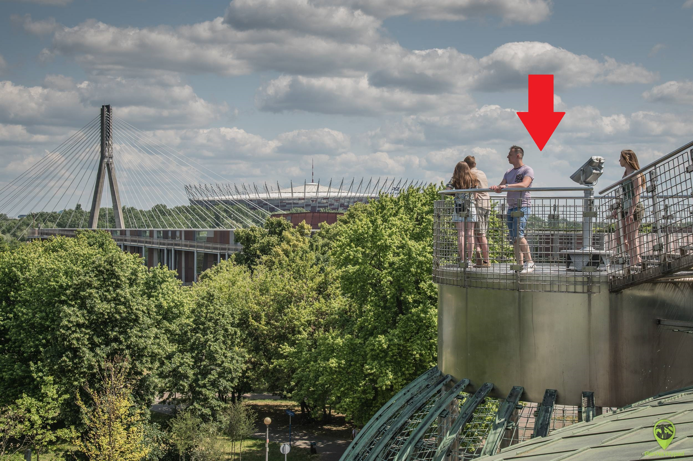

Gardens
Climb to the rooftop of the University Library, where you'll find a hidden gem—one of the most beautiful rooftop gardens in Poland! The green spaces were designed to harmonize with the modern architecture of the building. It’s the perfect spot to relax and reflect on how science and nature can intertwine. Maria Skłodowska-Curie had connections to the University of Warsaw, although she couldn't study there in her youth. During the inauguration of the 1921/1922 academic year and again in 1925, Maria visited the University of Warsaw. On her second visit, crowds tried to push their way into the hall to hear her lecture on radioactivity. The university even attempted to convince the double Nobel laureate to accept the Chair of Experimental Physics, but she declined. However, she remained in contact with the university. Task: Find the spot in the photo! There, you’ll discover the next QR code.
